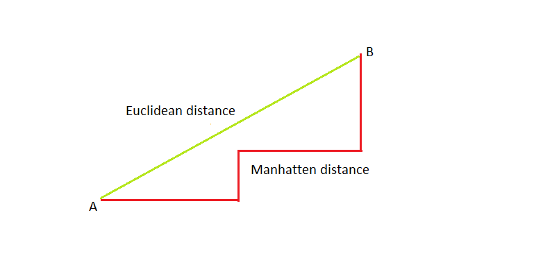
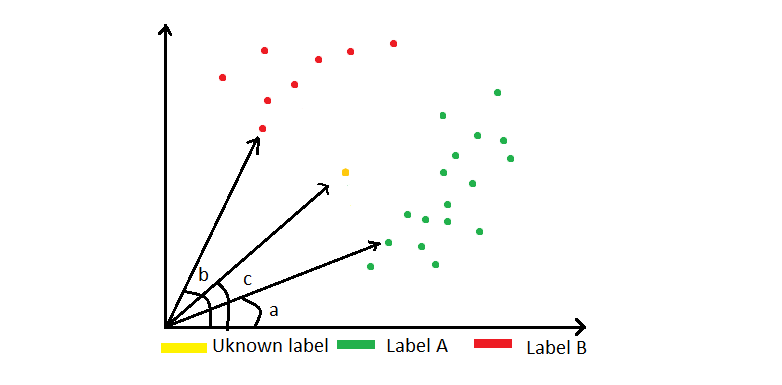

Introduction
K Nearest Neighbors (KNN) classifier is classifying the target data based on independent features. The figure given below shows the green plot and red plot for labels A and B, respectively. These are the known labels from the training dataset. The yellow point shown below is one of the test set attributes. The model doesn't know its label.
So it will first find it's distance with every other point irrespective of their label. Then the model will classify the unknown test dataset attribute based on the number of k-neighbors given by the user. If the number of k-neighbors=3, then the result is green; if the k-neighbors=5, then the result is red. Now let's try to learn the maths behind it.
It is generally preferred to choose odd values for k-neighbors to avoid confusion. If it's even, let's say 4, and we have two red points and two green points near the test data, then it will be difficult to determine its label.

Maths behind K-Nearest Neighbors Classifiers
The equation given below is the Minkowski equation, which is used to calculate the distance between the new attribute and the training dataset attribute.
D(X,Y) = ( Σ |x i-yi| p )(1/p)
If p=1 : then it is manhatten distance ,
p=2 : then it is euclidean distance,
p = infinity : then it is Chebyshev distance .
Manhatten distance:
It is useful for finding the distance between two coordinates or places when we need to include the root for finding the distance. If we use euclidean distance, then it just calculates the linear distance by excluding the root.
Euclidean distance
It is useful when we need to find the linear distance between two points.

Chebyshev distance
For large values of differnces, we can see their influence on the results.
| X | Y | difference p | Result | Σ difference p | Contribution of each |
| p = 1 |
| 1 | 3 | 2 | 18 | 18 | 2/18 = 0.11 |
| 8 | 5 | 3 | 3/18 = 0.16 |
| 7 | 20 | 13 | 13/18 = 0.72 |
| p = 2 |
| 1 | 3 | 4 | 13.49 | 13.49 2 = 181.98 | 4/181.98 = 0.021 |
| 8 | 5 | 9 | 9/181.98 = 0.049 |
| 7 | 20 | 169 | 169/181.98 = 0.92 |
Only for small values, the third row has a 92% contribution; you can only imagine how much it will change for larger values. Thus, this value is dominating others. If we have less number of features and we know that one feature is gonna dominate others than we can choose the higher values of p.
Using vectors for classifying labels
We can calculate the similarity in angles of the existing data points and the new data point. If the difference between their angles is small, then they are in the same direction, and the chances of them being a part of the same label are more. Thus we are treating all the data points as a vector which are originating from coordinate(0,0), and their angle is the angle between the x-axis and the line joining the datapoint and origin.
Thus, calculate the difference of angles for all vectors and the vector of a new data point, and select the k-nearest neighbors based on the angles. For the sake of clear drawing, i am taking two k-neighbors. Try to take an odd number of k-neighbors.
cos(X,Y) = Σ (XiYi) / ||X|| ||Y||
= Σ (XiYi) / (Σ X i 2 )1/2(Σ Y i 2 )1/2

Other important things which I found out
Note:
I am not too sure about certain points here, but these seem important as of now. If, in the future, I find any mistake, then I will update to or remove these points.
- So if you want to implement a model on future data like tomorrow, then train the model till today's data and test tomorrow. The data is thus split on temporal or time features.
- Divide the dataset into 3 parts, test(like 20%) train(60-65%) and validation (15-20%). Use validation for testing initially and then train the whole model on the training and validation dataset to get better results. Never train it on the testing dataset. Also, try to apply k folds on validation and training dataset.
-
Train the model again on the data, which is incorrectly classified using not more than 1% of the test data
This is not overfitting as we are not changing the parameters of the model for suiting the test cases.
This is not leaking as we are not telling the model the correct labels priorly. We can even try to move some values from training dataset to test dataset as a replacement.
References
1. k-nearest Neighbours: From slow to fast thanks to maths. Author: Lucas Bernardi
2. Introduction to Learning, Nearest Neighbors. Instructor: Patrick Winston
3. Lecture 3 "k-nearest neighbors" -Cornell CS4780 SP17. Author: Kilian Weinberger
4. Wikipedia: Minkowski distance